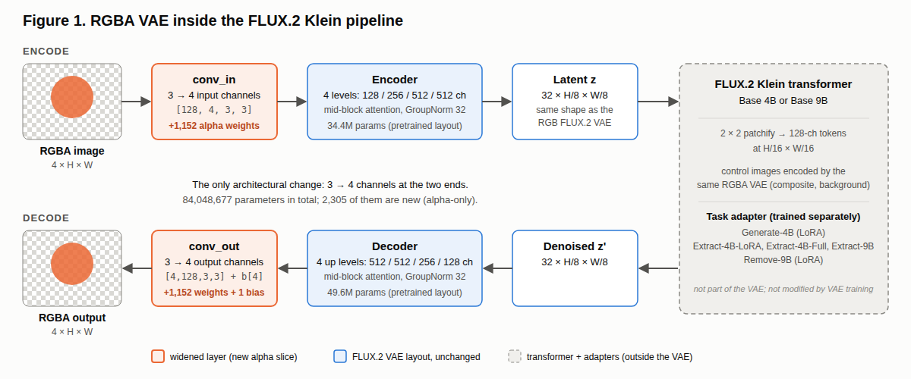
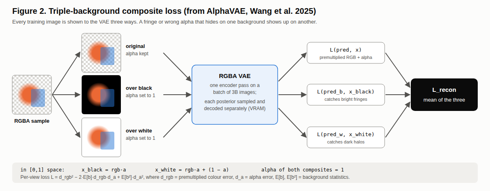
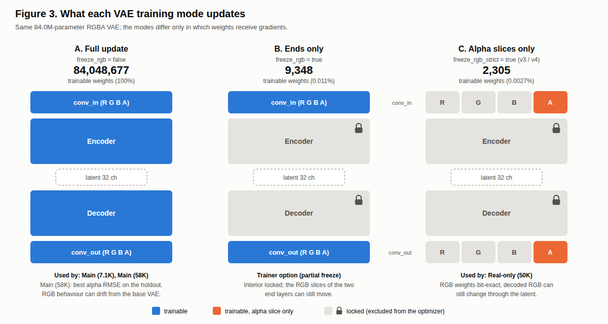
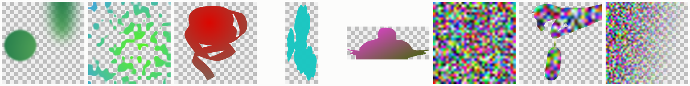
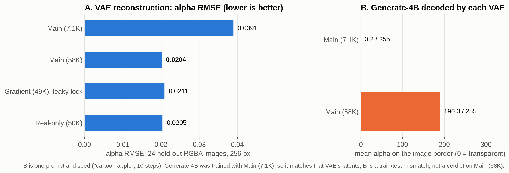
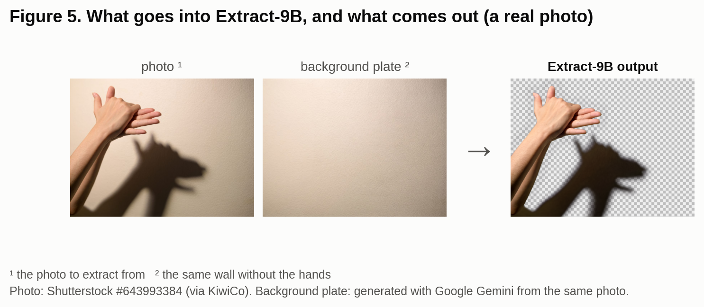
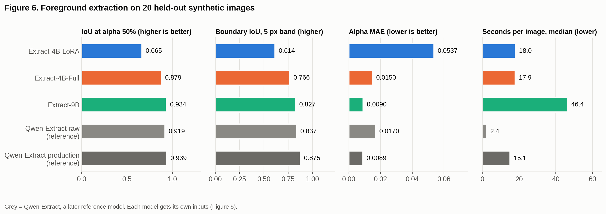
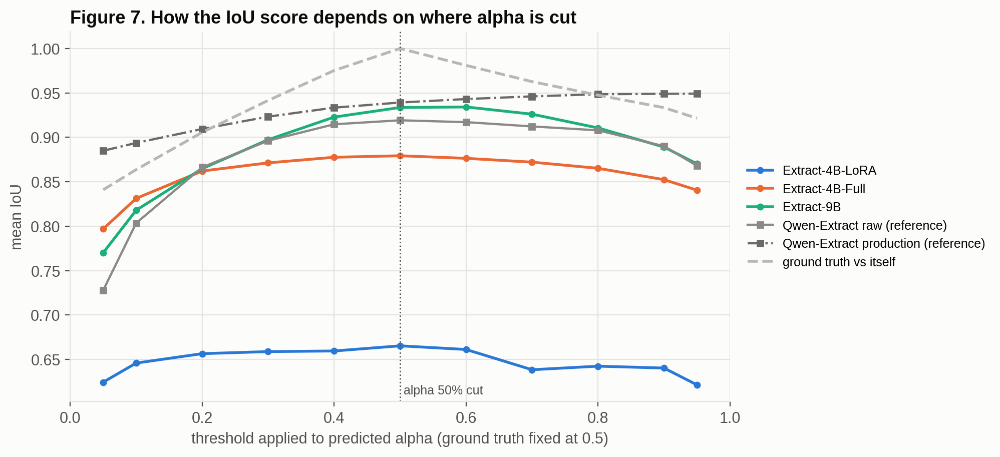
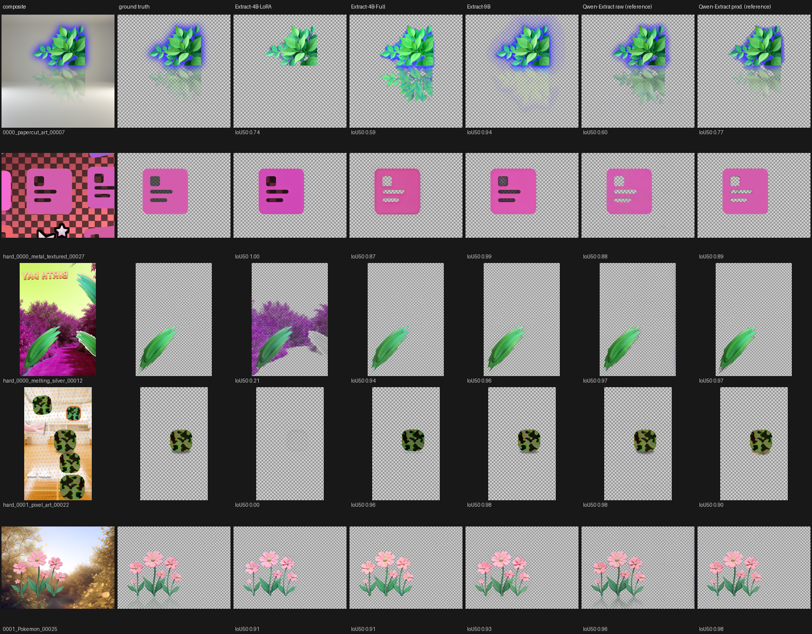

Teaching a FLUX.2 VAE to See Transparency
Abstract
Image generators such as FLUX.2 Klein produce opaque pictures: their VAE (the network that turns pixels into the compact "latent" code the generator works in, and back) has only three colour channels. I widened the FLUX.2 VAE to four channels (RGBA) and fine-tuned it with the triple-background loss of AlphaVAE (Wang et al., 2025). Only 2,305 of its 84,048,677 parameters are new. After 58,000 steps, my main VAE reconstructs alpha with RMSE 0.0204 on 24 held-out images.
On top of this VAE I trained three foreground-extraction adapters for FLUX.2 Klein. On 20 held-out images, at a 50% alpha cut:
- Extract-9B, a LoRA on the 9-billion-parameter model, reaches IoU 0.934;
- Extract-4B-Full, a full fine-tune of the 4B model, reaches 0.879;
- my first attempt, Extract-4B-LoRA, reaches 0.665.
While I was working on this, Qwen released Qwen-Image-2.1, a newer model with transparency built in. An extractor I later trained on it reaches the same accuracy as Extract-9B (0.919 raw, 0.939 with post-processing) and runs about 5× faster (2.4 s against 11 s per image), while Extract-9B keeps soft, semi-transparent detail better. To train these adapters, I modified the open-source ai-toolkit trainer so it can load an RGBA VAE, train on transparent images, and weight the loss towards object edges.
1. Problem
I first needed a model that can extract a foreground element from two images: a composite image with the said element, and the same image without the element (background).
However, after trying some models attempting to solve this issue (such as LayerDiffusion) none were fast enough or accurate enough to extract the elements I wanted.
A normal VAE has never been asked what transparency is. If you widen its first and last layers to four channels and train only on colour, the decoder learns to reproduce colour while the alpha channel collapses into solid or noisy values.
The real difficulty is that alpha is tangled up with colour. A half-transparent red pixel over black looks exactly like an opaque dark-red pixel. The network needs a training signal that tells those two cases apart.
My goals were:
- encode and decode alpha accurately;
- keep the VAE's original colour behaviour;
- keep the latent the same shape, so the existing FLUX.2 transformer can be reused, with small task adapters trained on top.
2. The models in this paper
I trained many checkpoints. These are the ones this paper uses, with the names used from here on.
2.1 VAE checkpoints
| Name | What it is | Training |
|---|---|---|
| Main (7.1K) | early checkpoint of my main run | all weights, step 7,100 |
| Main (58K) | final checkpoint of my main run; the VAE I use | all weights, step 58,000 |
| Gradient (49K) | alpha-only run with extra synthetic gradient images; its RGB lock leaked (§5) | alpha weights only, step 49,000 |
| Real-only (50K) | alpha-only run on real images, with the lock fixed | alpha weights only, step 50,000 |
2.2 Adapters
Adapters are trained on top of the FLUX.2 Klein transformer.
| Name | Task | Base model | Type | VAE | Inputs | Training data |
|---|---|---|---|---|---|---|
| Generate-4B | text → transparent image | Klein Base 4B | LoRA | Main (7.1K) | text prompt | ~2,300 captioned transparent PNGs |
| Extract-4B-LoRA | pull an object out of a picture | Klein Base 4B | LoRA | Main (58K) | composite with mask in alpha ³ + background plate ² | 58 examples |
| Extract-4B-Full | same | Klein Base 4B | full fine-tune | Main (58K) | composite ¹ + background plate ² | 2,039 examples |
| Extract-9B | same | Klein Base 9B | LoRA | Main (58K) | composite ¹ + background plate ² | 2,039 examples |
| Remove-9B | erase an object and fill the gap | Klein Base 9B | LoRA | Main (58K) | photo with object marked in alpha ⁴ | 10,755 pairs |
¹ Composite: the object pasted onto a background, which is the image you want to extract from.
² Background plate: the same background without the object.
³ Composite with mask in alpha: the composite, with its alpha channel set to 255 on the object and 128 everywhere else, so the model is told which object to take.
⁴ Photo with object marked in alpha: the photo, with alpha 128 on the object to remove and 255 everywhere else.
Later reference model:
| Name | Task | Base model | Type | VAE | Inputs |
|---|---|---|---|---|---|
| Qwen-Extract | pull an object out of a picture | Qwen-Image-2.1 turbo (4 steps) | LoRA | Qwen's own RGBA VAE | composite ¹ + mask hint ⁵ + fixed text prompt |
⁵ Mask hint: the composite darkened to 20% outside the object's mask.
I began this project before Qwen-Image-2.1 was released. Once it came out, I trained Qwen-Extract on it for another project. It is included here as a reference point: it shows how my FLUX adapters compare with a newer model built with transparency in mind. Figure 5 (§8) shows Extract-9B's inputs and output on a real photo.
3. Architecture (Figure 1)

The base model is AutoencoderKLFlux2. Its internal layers go through 128 / 256 / 512 / 512 channels down to a 32-channel latent at one-eighth resolution. I changed only its first and last convolutions:
| Layer | Original | RGBA | New parameters |
|---|---|---|---|
encoder.conv_in.weight |
[128, 3, 3, 3] | [128, 4, 3, 3] | 1,152 |
decoder.conv_out.weight |
[3, 128, 3, 3] | [4, 128, 3, 3] | 1,152 |
decoder.conv_out.bias |
[3] | [4] | 1 |
That makes 2,305 new parameters out of 84,048,677 (encoder 34.4M, decoder 49.6M). The latent keeps its shape, so the transformer receives exactly the input size it expects. Whether it can use those latents to make transparent images is a separate question, answered in §6.
4. Training objective (Figure 2)

I used the loss from AlphaVAE (Wang et al., 2025) and adapted it to FLUX.2. Each training image is shown to the VAE three ways:
- the original RGBA;
- flattened onto black;
- flattened onto white.
The two flattened versions have alpha set to fully opaque. All three go through the encoder as one batch, each is decoded, and the three losses are averaged.
Each loss compares premultiplied colour (colour × alpha) and alpha, weighted by the average colour of typical backgrounds. It therefore measures how wrong the image would look when placed on a background, not how wrong the raw numbers are. The black and white views catch mistakes that are hidden by single a background, for instance a light fringe is invisible on white and obvious on black.
d_rgb = target_rgb · target_a − pred_rgb · pred_a (premultiplied colour error)
d_a = target_a − pred_a (alpha error)
L = d_rgb² − 2·E[b]·d_rgb·d_a + E[b²]·d_a²
E[b] = [−0.0357, −0.0811, −0.1797] E[b²] = [0.3163, 0.3060, 0.3634]
The three views do not mathematically force the network to separate colour from alpha. They make almost every separation mistake show up in the loss.
5. What I locked, and a bug I found (Figure 3)

I tried three levels of freezing:
| Mode | Trainable parameters | Used by |
|---|---|---|
| A. Everything | 84,048,677 (100%) | Main (7.1K), Main (58K) |
| B. First and last layers only | 9,348 (0.011%) | trainer option, not used for these checkpoints |
| C. Only the new alpha slices | 2,305 (0.0027%) | Gradient (49K), Real-only (50K) |
Why synthetic gradient images. Mode C gave me an idea. If the colour weights are frozen, the colour content of a training image matters much less: almost everything the model learns comes from the alpha channel. So instead of collecting more curated transparent images, I could generate them. I made 5,000 synthetic images: random colour gradients, flat colours or noise, cut into shapes by an alpha channel. The alpha is either a simple shape (blurred ellipses, rectangles, cloudy noise, fades) or the silhouette of a real transparent image. Gradient (49K) trained on these plus the 5,829 real images, at resolutions from 256 to 768 pixels.

Examples of the synthetic training images, shown on a checkerboard (transparent areas).
Mode C was meant to leave every colour weight untouched. I zeroed their gradients with hooks and trained Gradient (49K) for 49,000 steps. When I compared its final weights with its starting weights, 4 of 251 tensors had moved. The colour weights had all been multiplied by the same factor, 0.99581.
A gradient would not scale everything by one number, meaning it was an optimiser issue. AdamW applies weight decay to every parameter it is given, whether or not its gradient is zero. My masks stopped the gradients but not the decay. I had also forgotten to mask one bias vector (encoder.conv_in.bias, 128 values).
The fix was to give the optimiser only the parameters meant to train, set weight decay to zero, and freeze that bias. After a 300-step test, the colour weights were bit-for-bit identical, while the alpha weights had changed. Real-only (50K) was trained this way.
Normally freezing the colour weights does not keep the colour output exactly the same: the new alpha weights feed into the same first layer, so they can still nudge the latent slightly. But in practice the colour error did not change (0.0133 for both).
6. VAE results (Figure 4)

Test: 24 held-out RGBA images, centre-cropped to 256 × 256. Each is encoded and decoded, then compared with the original. The error is RMSE on a 0–1 scale, so lower is better:
- alpha: error on the transparency channel;
- premultiplied RGB: error on the visible colour;
- white composite: error after flattening onto white, as a viewer would see it.
| VAE | Alpha RMSE | Premultiplied RGB RMSE | White-composite RMSE |
|---|---|---|---|
| Stock FLUX.2 VAE (RGB only) | – | 0.0121 | 0.0138 |
| Main (7.1K) | 0.0391 | 0.0228 | 0.0283 |
| Main (58K) | 0.0204 | 0.0133 | 0.0163 |
| Gradient (49K) | 0.0211 | 0.0137 | 0.0167 |
| Real-only (50K) | 0.0205 | 0.0133 | 0.0164 |
Main (58K) is the best VAE. Its alpha error is 48% lower than Main (7.1K)'s. Real-only (50K) comes within 0.7%, a gap too small to call on 24 images. Training only the alpha slices did not beat training everything.
The price of transparency. The first row is the original FLUX.2 VAE, which has no alpha channel. It was given the images already flattened onto black and white, and its alpha column is empty. Compared with it, Main (58K) has about 10% more colour error on black (0.0133 vs 0.0121) and 18% more on white (0.0163 vs 0.0138). That is the cost of fitting transparency into the same latent, or maybe a longer training would fix this error.
Why Main (7.1K) is compared. For two reasons: to show how the VAE improved during training, and because Generate-4B, my text-to-transparent-image LoRA, was trained with Main (7.1K) as its VAE. An adapter learns the habits of the VAE it was trained with, and probably learns to compensate for that VAE's errors. Decoding Generate-4B through Main (58K) therefore makes the background mostly opaque: mean border alpha 190/255, against 0.2/255 through Main (7.1K) (one prompt, "cartoon apple"). This comes from the mismatch, not from Main (58K) being worse. Retraining Generate-4B on Main (58K) is still to do.
Main (58K) training: 5,829 real RGBA images, 256-pixel crops, about 58,000 steps (20 epochs at batch 2), learning rate 1e-5 with a cosine schedule, fp16. It used only the composite loss, with no perceptual or adversarial terms. The starting point was the FLUX.2-dev VAE with its end layers widened.
The synthetic gradient images (§5) improved results on synthetic test images but not on the real ones: Real-only (50K), trained without them, is slightly better on every measure in the table. Gradient (49K) also had the leaky lock, though, so the two causes cannot be fully separated.
7. Tooling: my ai-toolkit fork, "ai-toolkit-RGBA"
I trained all FLUX adapters with ai-toolkit (ostris), an open-source trainer. Out of the box it cannot use a four-channel VAE, so I modified it.
Changes required for alpha training. Without these, ai-toolkit cannot train on transparency.
- RGBA VAE loading: a small adapter class lets the trainer load a four-channel VAE from a folder via
vae_path.- RGBA data: a new
rgba: trueoption keeps the alpha channel on training images and on the input (control) images. Under fully transparent pixels, it fills the invisible colour with nearby colours ("alpha bleed"), so black does not leak into edges as a dark halo.- RGBA previews: during training, samples are decoded by the four-channel VAE and saved as transparent PNGs.
Changes that improved quality
- Edge-weighted loss: the trainer finds the object's alpha edges and weights the loss there. A soft, semi-transparent ring around an object is a small error spread over many pixels, which a normal loss barely notices.
- Sharpness loss: compares the sharpness (spatial gradients) of the prediction with the target's, so blurry edges cost more.
Extract-9B used both. The other adapters used neither.
Changes for my hardware. With DeepSpeed ZeRO-3 over two GPUs, a full fine-tune of the 4B transformer fits on two 16 GB consumer cards; that is how I trained Extract-4B-Full. I also added faster caching and job-queue improvements to the web UI.
In total I changed 41 files of upstream ai-toolkit (+1,472 / −252 lines) and added several new modules.
8. Extracting objects: how the adapters compare
I tested the extraction adapters on 20 transparent objects that none of them saw during training. Each model gets the inputs it was trained with (Figure 5). Qwen-Extract, trained later on the newer Qwen-Image-2.1, is included as a reference.

Figure 5 uses a real photo of hands making a shadow puppet, and a photo of the same wall without them. The hands' shadow is exactly the kind of soft, semi-transparent detail an RGBA pipeline is for: Extract-9B cuts out the hands and keeps the shadow as a soft, semi-transparent dark layer. (There is no ground truth for this photo, so it is a visual example only; the scores below come from the 20 test images.) Photo: Shutterstock #643993384 (via KiwiCo); background plate generated with Google Gemini from the same photo.
8.1 How I score a cut-out
A cut-out's alpha is soft, anywhere between 0 and 1. To compare it with the true object, I count a pixel as object when it is more than 50% opaque. The score is the IoU: the overlap between the predicted and true object, divided by their combined area, where 1.0 is perfect. I also report the IoU of just the outline (boundary IoU) and the average alpha error, which needs no threshold.
The 50% cut is a simplification. About 14% of these objects is soft detail such as glow, shadow and reflections, which it counts as background. Figure 7 shows how the scores change when the cut moves.
8.2 Results

| Extract-4B-LoRA | Extract-4B-Full | Extract-9B | Qwen-Extract raw | Qwen-Extract prod. | |
|---|---|---|---|---|---|
| IoU @ 50% | 0.665 | 0.879 | 0.934 | 0.919 | 0.939 |
| Boundary IoU | 0.614 | 0.766 | 0.827 | 0.837 | 0.875 |
| Alpha error | 0.054 | 0.015 | 0.009 | 0.017 | 0.009 |
| Empty results | 4 / 20 | 0 | 0 | 0 | 0 |
| Seconds per image | 18 | 18 | 46 (11 at 6 steps) | 2.4 | 15 |
Italics = Qwen-Extract, the later reference model. "Prod." is Qwen-Extract with its post-processing.
- Extract-9B is my best extractor. It beats Extract-4B-Full on 18 of 20 images. On overall accuracy it is level with Qwen-Extract.
- Extract-4B-Full might close the gap with more training: it stopped at 1,750 of its 3,000 planned steps.
- Extract-4B-LoRA, my first attempt, is unreliable. It returned nothing on 4 images. It was trained on only 58 examples; the later adapters used 2,039.
- Qwen-Extract is faster, but it needs two GPUs (even with Quantization), while Extract-9B fits on one 16 GB card (with Quantization).
- Extract-9B does not need 25 steps. At 6 sampling steps it scores the same on the 20 test images (IoU 0.934 at both; alpha error 0.0096 vs 0.0090) in 11 s instead of 46 s. That leaves Qwen-Extract raw about 5× faster, not 20×.
With only 20 test images, I checked every difference claimed above with a paired statistical test (95% confidence).

In Figure 7, Qwen-Extract production keeps climbing up to the highest cut, because its alpha is almost all-or-nothing. The FLUX adapters peak near 50% and drop on either side, because they keep more soft, in-between alpha.
8.3 What the pictures show (Figure 8)

The scores miss things that are obvious to the eye:
- Leaves with a faint reflection. Extract-9B scores high (0.94), but its reflection is a blur. Qwen-Extract raw reproduces it best, and Qwen-Extract production cuts part of it off.
- Icon with grey-filled cut-outs. The icon's cut-outs are filled with semi-transparent grey. Extract-9B and Extract-4B-LoRA keep the grey fill. Extract-4B-Full and both Qwen-Extract versions punch empty holes instead.
- Leaf on a pink forest. Extract-4B-LoRA takes most of the forest along with the leaf. The others are clean.
- Camouflage icon with a soft shadow. Extract-4B-Full drops the shadow, Qwen-Extract adds too much, and Extract-4B-LoRA returns nothing.
- Flowers. Every model handles this well, bug only Qwen returns a visible reflection.
9. Limitations
- The VAE test uses 24 images at one resolution. Differences under about 1% are not meaningful.
- The Generate-4B comparison (Figure 4B) is one prompt and one seed.
- The extraction test has 20 images and one seed per image.
- The FLUX.2-dev-derived weights carry the FLUX Non-Commercial License.
Credits
AlphaVAE (Wang, Yu, Zhan, Yuan, 2025) for the RGBA VAE method and composite loss. LayerDiffuse and its FLUX.1 adaptation for the VAE-plus-adapter idea. ostris/ai-toolkit as the trainer I modified. Black Forest Labs (FLUX.2) and Qwen (Qwen-Image-2.1) for the base models.